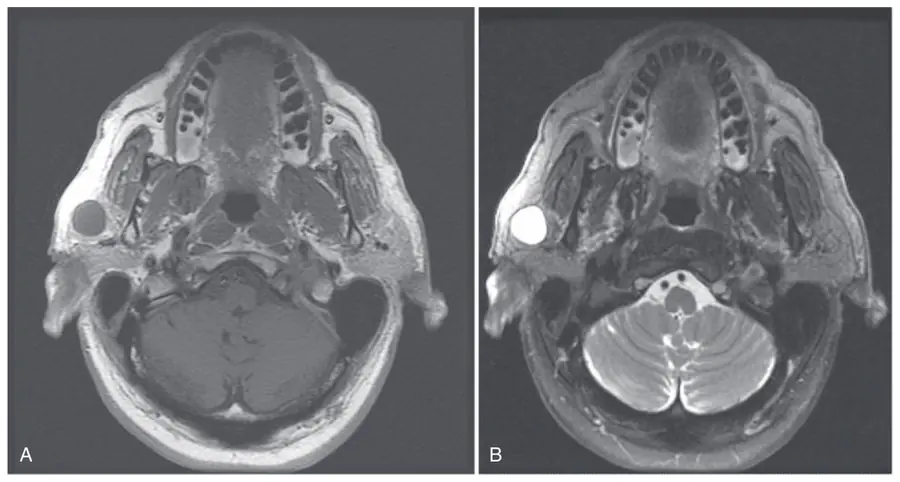
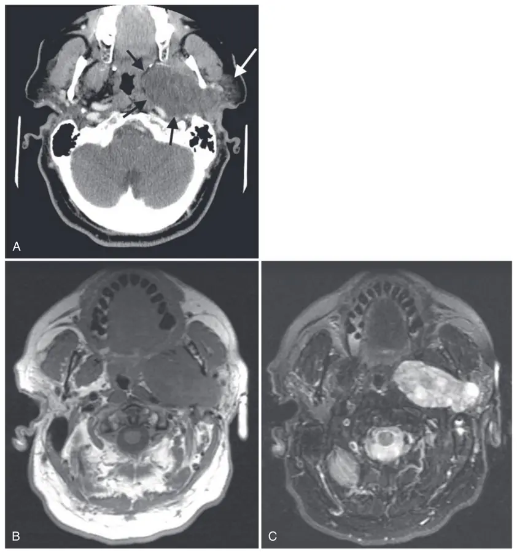

نسخه استخراجشده؛ ترجمه یا تأیید علمی انجام نشده است. وضعیت: captured
یک عدد که جای کیستها را در فهرست افتراقی مشخص میکند: «کیستهای غدد بزاقی نادرند — کمتر از ۵٪ همهی تودههای غدد بزاقی.»

و دو خانواده دارند: مادرزادی (برانشیال، لنفواپیتلیال، درموئید)، و اکتسابی (سیالوسیست و کیستهای پاروتید مرتبط با ایدز).
و مهمترین تفکیک این اسلاید — سیالوسیست در برابر سیالوسل:
و یک هشدار اصطلاحی صریح: «اصطلاحات این دو وضعیت اغلب در متون بهجای یکدیگر و نادرست به کار میروند، ولی پاتوفیزیولوژی متفاوتشان بهخوبی فهمیده و مستند شده است.»
و رانولا: «اصطلاح رانولا برای کیستهای غدد سابلینگوال نگه داشته شده، صرفنظر از اینکه کیست حقیقی باشد (معمولاً درون حفرهی دهان) یا کیست کاذب (که به پایین و فراتر از عضلهی مایلوهایوئید فرو میرود).»
و ARPC — کیستی که یک تشخیص سیستمیک را فاش میکند: «کیستهای پاروتید مرتبط با ایدز موجودیت مهمی برای دندانپزشکاناند، چون میتوانند نخستین تظاهر عفونت HIV باشند.» و «شیوعشان با درمان ضدرتروویروسی بسیار فعال (HAART) کاهش یافته است».
و دو قاعدهی توزیعی که استثناهایشان را باید حفظ کنی:
و کیستهای مادرزادی یک نکتهی زمانی دارند: «معمولاً دیرتر در زندگی شناسایی میشوند، با آنکه هنگام تولد حاضر بودهاند.»
و ظاهر تصویری: روی سیالوگرافی بهطور غیرمستقیم دیده میشوند، «با جابهجایی قوسی مجاری بزاقی به دور کیست، که ظاهری به نام «توپ در دست» میسازد». روی MDCT با مادهی حاجب: «نواحی خوشمحیط، با تضعیف پایین، و بدون تقویت». و روی MRI: «نواحی خوشمحیط با سیگنال بالا روی T2 که پس از تجویز مادهی حاجب تقویت نمیشوند».
و مدیریت: «معمولاً برداشت جراحی کیست یا کل غدهی بزاقی درگیر.»
نئوپلاسمهای غدد بزاقی غیرشایعاند — «کمتر از ۳٪ همهی نئوپلاسمهای سر و گردن».

و توزیع محلشان: «تقریباً ۸۰٪ در غدهی پاروتید، ۵٪ در سابمندیبولار، ۱٪ در سابلینگوال، و ۱۰ تا ۱۵٪ در غدد بزاقی فرعی برمیخیزند.»
و حالا زیباترین قاعدهی این یونیت: «احتمال خوشخیم بودن نئوپلاسمهای غدد بزاقی رابطهی مستقیم با اندازهی غده دارد. بنابراین، بیشتر نئوپلاسمهای غدد بزاقی خوشخیم یا بدخیمیهای کمدرجهاند.»
و همین قاعده، آمار بدخیمی را میسازد: «تقریباً ۲۰٪ نئوپلاسمهای پاروتید بدخیماند، در مقایسه با ۵۰ تا ۶۰٪ نئوپلاسمهای سابمندیبولار، ۹۰٪ نئوپلاسمهای سابلینگوال، و ۶۰ تا ۷۵٪ نئوپلاسمهای غدد بزاقی فرعی.»
پس هرچه غده کوچکتر، احتمال بدخیمی بیشتر. این یک جمله، همهی این اعداد را خلاصه میکند.
و سه نئوپلاسم خوشخیمی که باید بشناسی:
و تومور وارتین یک امضای هستهای هم دارد: «تومور وارتین بهطور مشخصی دفع کاهشیافتهی TPT نشان میدهد.»
و ظاهر تصویری نئوپلاسم خوشخیم: «MRI روش ترجیحی برای نئوپلاسمهای غدد بزاقی است، بهدلیل تفکیک تضاد بافت نرم برترش.» نئوپلاسمهای خوشخیم «عموماً حاشیههای خوشمرز و سیگنال یا تضعیف داخلی متغیر دارند، بسته به بافت غالب نئوپلاسم». و تزریق مادهی حاجب سبب تقویت نئوپلاسم میشود «چون عروق نئوپلاسم بیش از بافت غدهی مجاور است». و مانند کیستها، سیالوگرافی با ظاهر «توپ در دست» بهطور غیرمستقیم به توده اشاره میکند.
و یک نکتهی جراحی که تفاوت غدد را نشان میدهد: «نئوپلاسمهای خوشخیم غدهی پاروتید معمولاً با قصد حفظ غده برای پرهیز از نقص عصب صورتی برداشته میشوند. غدد سابمندیبولار و سابلینگوال ناگزیر بهطور کامل همراه با نئوپلاسم خوشخیم برداشته میشوند.»
و دو بدخیمی شایع: «شایعترین نئوپلاسم بدخیم غدد بزاقی کارسینوم موکواپیدرموئید است، و پس از آن کارسینوم آدنوئید کیستیک.» موکواپیدرموئید «از آمیزهی متغیری از سلولهای موکوسی و اپیدرموئید برخاسته از اپیتلیوم مجرایی» ساخته شده. و آدنوئید کیستیک «از سلولهای میواپیتلیال و مجرایی ساخته شده و تمایل زیادی به گسترش در امتداد اعصاب دارد».
و دو چهرهی بدخیمی، با دو پیشآگهی کاملاً متفاوت:
و مهمترین اشتباه رایج تصویری این درس: «در بسیاری موارد، نوع کمدرجه در سیالوگرافی، MDCT، MRI و سونوگرافی ظاهری شبیه نئوپلاسمهای خوشخیم دارد.» و آنچه بدخیمی پرُدرجه را لو میدهد: «ویژگیهایی مانند حاشیههای بدمرز و تهاجم و تخریب ساختارهای مجاور، وقتی دیده شوند، شاخصهای معمول بدخیمی پرُدرجه به شمار میروند.»
و یک نقش ویژه برای MRI: «استفاده از گادولینیوم وریدی، MRI را به روش انتخابی برای ارزیابی گسترش داخلجمجمهای و پرینورال بیماری غدد بزاقی تبدیل میکند.» — و این دقیقاً همان چیزی است که کارسینوم آدنوئید کیستیک انجام میدهد.
و مدیریت بدخیمی: «معمولاً جراحی، که اغلب نیازمند برداشت کامل غدهی درگیر و دیسکسیون رادیکال گردن است. ترکیبی از جراحی، پرتودرمانی و شیمیدرمانی هم میتواند به کار رود.»
نوع سؤال: ساخت کلمه · 7 خانه
حروف منبع: ا · ی · ش · غ · ی · ع · ر